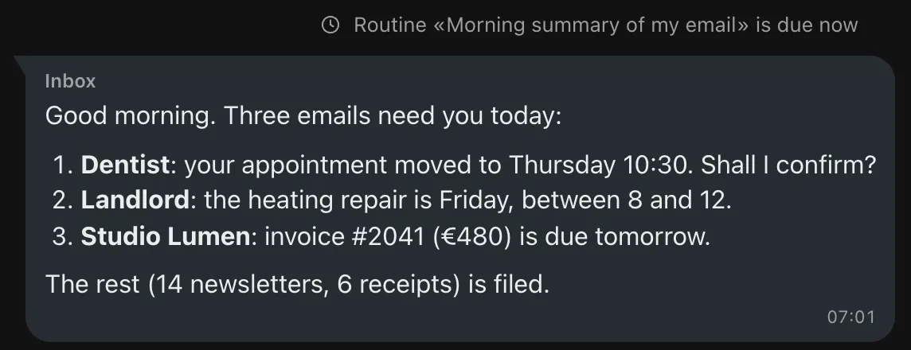
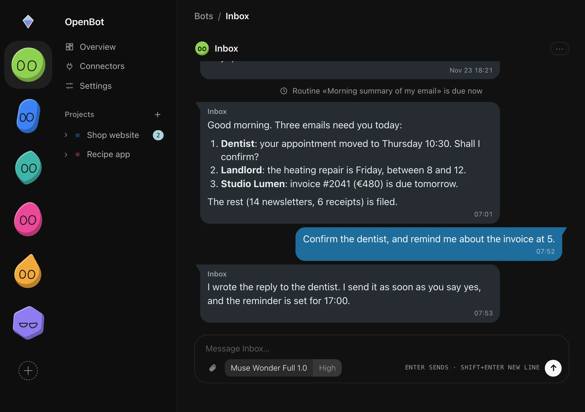
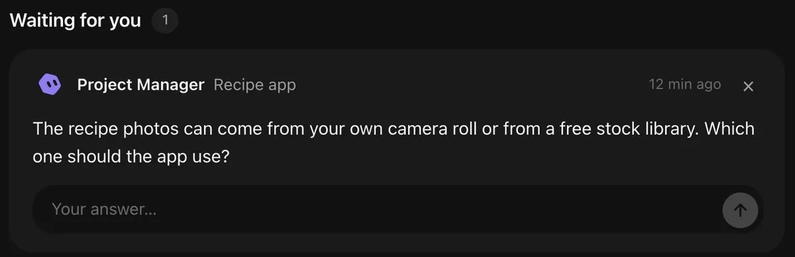
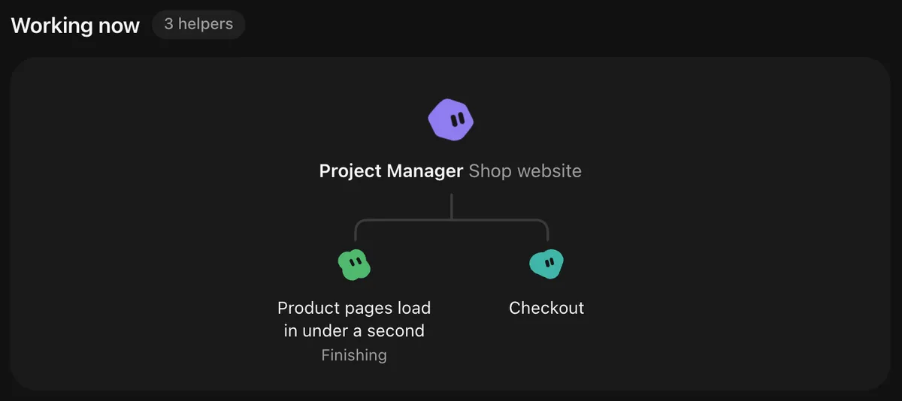
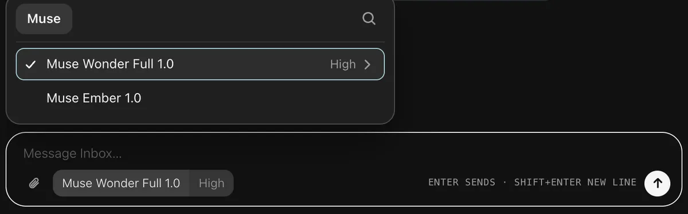
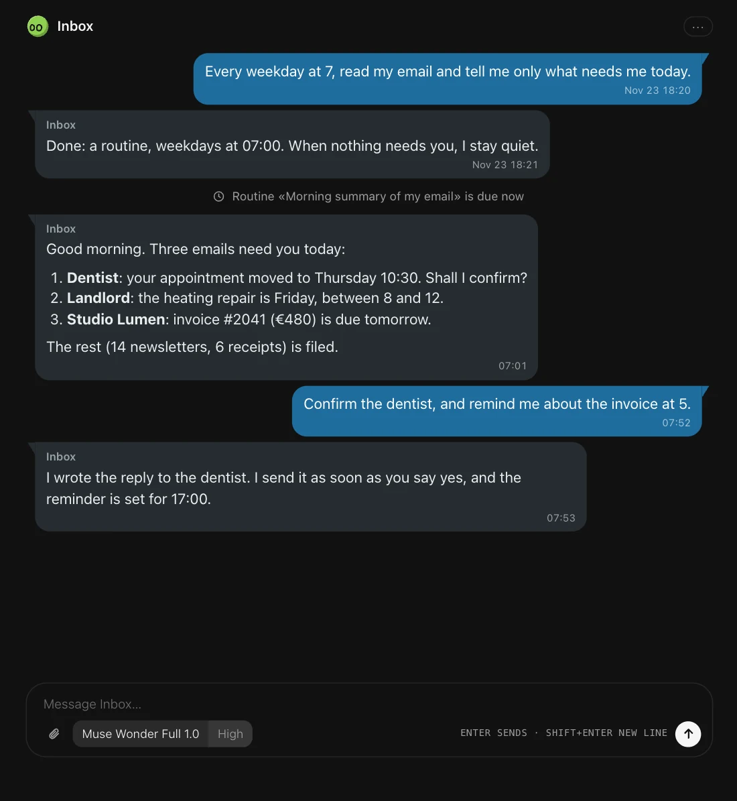
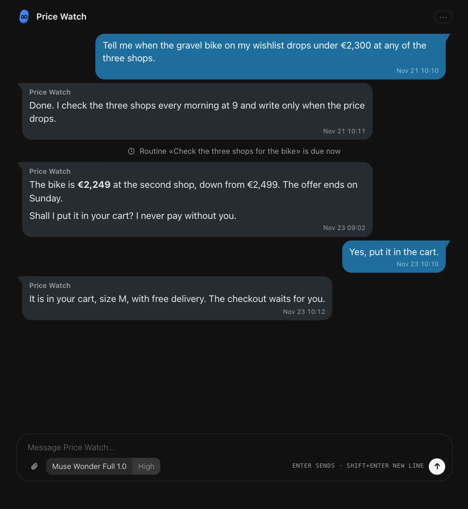
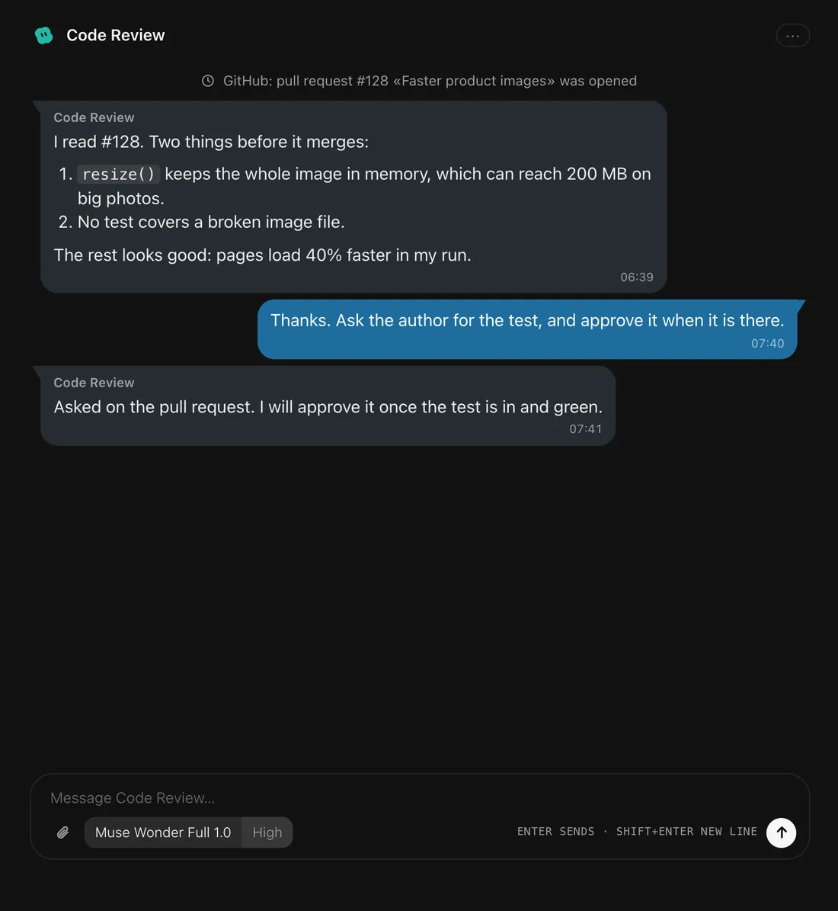
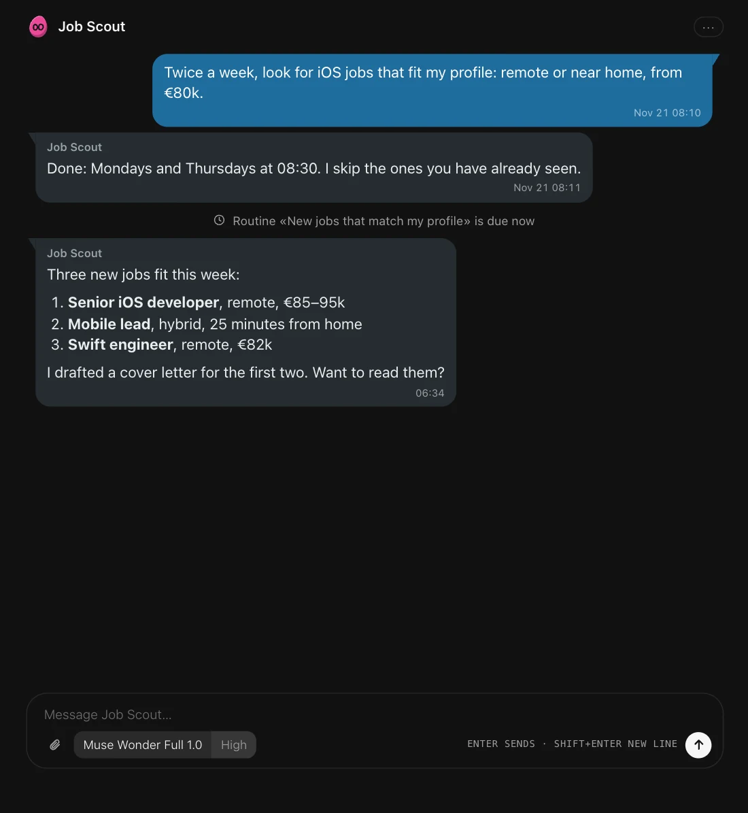

Bots start on their own
Routines run on their schedule and report back only when something needs you.

AI helpers that work on your own computer. Give each bot a job and a schedule, and it comes back with the work done, using the agents you already pay for.

The OpenBot app, with demo data.
Tell a bot what you need in plain words. "Every weekday at 7" becomes a routine, and when nothing needs you, it stays quiet.
Each bot keeps its own memory and skills, which you can read and edit. Your corrections stick, so it gets better at doing things your way.
One app for your errands and your code. It runs on your computer, so your files, logins and history stay with you.
Routines run on their schedule and report back only when something needs you.

Bots and managers settle what they can. You are asked for a choice, a password or a payment, not for busywork.

A manager keeps each project's plan, starts one agent per item and merges the work after the checks pass.

The Anthropic CLI, OpenAI Codex, GitHub Copilot or Meta's Muse Code. Choose agent, model and effort for each role.

Scan one QR code and your phone gets a chat with every bot and project, end-to-end encrypted.
Do a task once in Edge. The bot drafts a skill, asks its questions and rehearses before it runs alone.
GitHub, a mail script or any service can start a routine. What arrives is read as data, never as orders.
Every tool call of every agent passes OpenBot's rules first, in a few milliseconds.

Your inbox, read for you. Every weekday at 7 it reads your email and tells you only what needs you today. Everything else is filed.

Buy at the right price. It checks the shops every morning and writes only when the price drops below your limit.

A second pair of eyes. When a pull request opens on GitHub, it reads the change and tells you what to fix before it merges.

New jobs, twice a week. It searches for roles that fit your profile and drafts a cover letter for the best ones.
OpenBot costs nothing. You pay only for the agent accounts you choose, the same ones you may already have.
Grok Bot, Muse, Dots and Duet also give you bots that work in the background. Here is where they differ.
| OpenBot | Grok Bot | Muse | Dots | Duet | |
|---|---|---|---|---|---|
| Made by | Open source | SpaceXAI with Cursor | Meta | OpenAI | Anthropic |
| Where bots work | On your Mac or Linux server | On a cloud computer; on your desktop only if you allow it | On Meta's cloud computer | On OpenAI's cloud computer; on your laptop only if you allow it | On Anthropic's cloud computer |
| Choose the model | Yes: agent, model and effort per role | No: it picks the model for each task | Muse Spark | GPT-6 Astra; OpenAI may mix models | One Anthropic model |
| Cost | Free; you pay for the agents you use | Included in X Premium, Super and Ultra, SuperGrok and Cursor plans | A free tier and paid plans | First dot included in ChatGPT Pro and Business Premium | Included in Anthropic's Pro, Max and Ultra plans |
| Where you get it | macOS and Linux; Windows through WSL 2 | macOS, Windows, Linux, iOS, Android, X and Slack | iOS, Android, the web and WhatsApp, in a few countries | ChatGPT apps, Slack and Teams; Pro not in the EEA, UK or Switzerland | iOS, Android and the web; US only, with a waitlist |
| Before it sends or buys | Every tool call passes OpenBot's rules; bots are told to ask you | Sensitive actions stop for your approval | A separate agent, Sentinel, approves what goes out | Your rules: allow, ask or block | Asks before messages and payments |
| Open source | Yes, MIT | No | No | No | No |
One line in a terminal. The installer checks the release's signature and each file's checksum before it puts anything on your computer.
Press ⌘ Space, type Terminal and press Return.
curl -fsSL https://github.com/andreseloysv/Tirith/releases/latest/download/install.sh | shIt puts tirith in ~/.local/bin and starts a short guide.
Pick the agents you use: the Anthropic CLI, OpenAI Codex, GitHub Copilot or Muse Code. For each, the guide runs its maker's installer, opens its sign-in and checks that it answers.
Go to 127.0.0.1:7717 in your browser. The + under the faces makes your first bot. If the page says this browser is not signed in, run:
~/.local/bin/tirith openAnswer yes when the guide asks to run OpenBot as a service, so your routines run while you are away. Always on, step by step.
curl -fsSL https://github.com/andreseloysv/Tirith/releases/latest/download/install.sh | sudo sh -s -- --serverWith sudo, OpenBot runs as its own user, tirith, never as root, and starts at boot with systemd. On a desktop, run it without sudo and --server.
Each sign-in shows a link and a code, so it works over SSH. The guide installs each agent from its maker and checks that it answers.
ssh -N -L 7717:127.0.0.1:7717 you@your-serverLeave that running and open http://127.0.0.1:7717/ in your browser. If the page says this browser is not signed in, run this on the server and open the link it prints within 10 minutes:
tirith open linktirith doctorIt lists every part and how to fix what is missing.
Open PowerShell as administrator and run:
wsl --install -d UbuntuRestart when asked, then open Ubuntu from the Start menu and choose a user name and password.
curl -fsSL https://github.com/andreseloysv/Tirith/releases/latest/download/install.sh | shIt installs tirith in ~/.local/bin and starts the guide.
Answer the guide as on Linux. Each sign-in shows a link and a code to open in your Windows browser.
Go to http://127.0.0.1:7717/ in Edge or Chrome: WSL 2 passes it through to Windows. If the page says this browser is not signed in, run this in Ubuntu and open the link it prints:
~/.local/bin/tirith open linkThere is no native Windows version yet: OpenBot runs inside WSL 2, Microsoft's Linux for Windows, and needs it running while your bots work.
How to keep it running, how the bots learn, and how it works inside.
Keep OpenBot running on a Mac mini or a server, so your bots work while you sleep.
How bots learn BotsMemory, skills, Teach, the weekly Coach and the lab that keeps only what is better.
Under the hood InsideOne small daemon on your computer: plans, lanes, the merge queue, rules and the network sandbox.
They run your bots on their maker's computers, with their maker's models, inside their maker's subscription. OpenBot runs on your own computer, lets you choose the agent and model for each job, and is open source. The table above has the details.
The Anthropic CLI, OpenAI Codex, GitHub Copilot and Meta's Muse Code, each with the account you sign in with. You choose agent, model and effort per role, with a fallback for when one runs out of credits.
Yes: your bots work where OpenBot runs. It can run as a service that starts by itself, on a Mac even with nobody logged in. A Mac mini or a small Linux server works well.
Yes. Scan the QR code on the Rooms page and your phone gets a chat with every bot and project, end-to-end encrypted through agentsmessenger.com, with nothing to install.
Every bot is told to ask before it sends, buys, deletes or publishes, and a judge model reviews its turns afterwards and flags anything that had no approval. That is an instruction, not a lock, so give each bot only the accounts it needs.
OpenBot keeps its state on your computer, and its page never listens on the network. What your agents send to their models follows each provider's terms. Everything OpenBot starts reaches the network through its own proxy, which records every destination.
Through WSL 2, as on Linux; see the Windows steps above. There is no native Windows version yet.
Free, open source, and on your own computer.